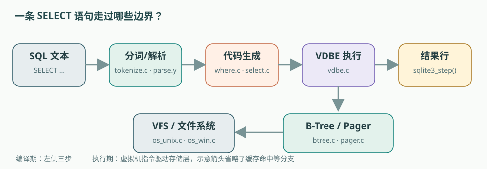
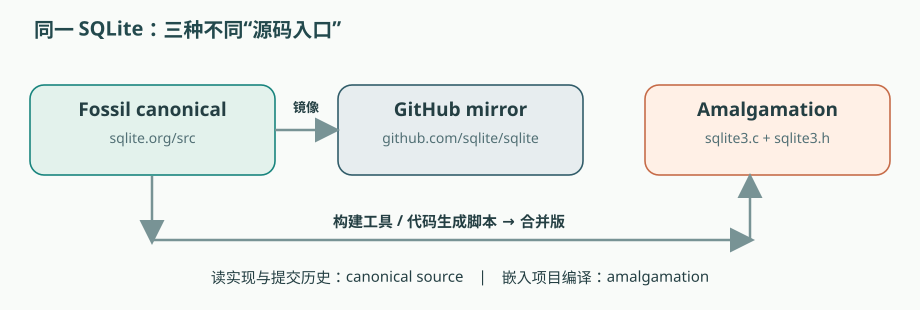

从一条 SQL 认识 SQLite：源码获取与阅读地图
SQLite 并不是“把 SQL 解释后直接写文件”：它先编译语句，再由虚拟机调度存储层。理解这条路线，才能知道从哪里读源码。
1. 一个看似简单的 SELECT，真的只是一次读文件吗？
设想程序执行 SELECT name FROM users WHERE id = 7;。数据库不能只寻找字符串 users，然后直接访问第 7 行：它必须判断 SQL 是否合法、表和列是否存在、索引是否可用、查询执行顺序是什么，以及在哪里读取相应的页。
SQLite 把这些问题分成两段：准备语句（prepare）阶段把 SQL 转为字节码；执行语句（step）阶段运行这些指令并产生结果。它更接近一台嵌入式“编译器 + 虚拟机 + 存储引擎”，而不是一个只会读写文件的函数库。官方 架构文档明确给出了这种划分。

sqlite3_prepare_v2() 与 sqlite3_step() 的边界，比死记 28 个模块更有用。2. 拿到的 sqlite3.c 是“原始源码”吗？
SQLite 的源码存在两种常见形态。Canonical source（规范源文件树）包含 src/、tool/ 和生成流程；Amalgamation（合并版）把许多源文件处理后汇集为 sqlite3.c。合并版适合嵌入应用和单文件编译，但追踪设计逻辑、生成器与历史变更通常从规范源文件树开始。

推荐把真实源代码与课程的讲解文件分开：本仓库存放教程、图、实验和质量规则，不复制几十万行上游 SQLite 源码。需要核对符号或版本时，再定位到某个 SQLite 检出版本。
三条实用途径
# A. 使用上游 Fossil（完整历史；需先安装 fossil）
fossil clone https://sqlite.org/src sqlite.fossil
mkdir sqlite-src && cd sqlite-src
fossil open ../sqlite.fossil
# B. 通过官方 GitHub mirror 阅读/克隆代码
git clone https://github.com/sqlite/sqlite.git
# C. 从 sqlite.org/download.html 下载匹配版本的 amalgamation
# 解压后可见 sqlite3.c / sqlite3.h / shell.c如果目标是定位回归问题，应先记录 sqlite3_sourceid()、sqlite3_libversion() 与构建选项，并绑定对应源代码检出；只看“最新分支”的行号容易比错版本。
3. 第一次走进源文件树
不需要逐个打开全部文件。先从“可观察到的行为”逆向寻找模块：SQL 进入程序从 main.c、prepare.c 附近开始；语法走 tokenize.c、parse.y；选查询路径看 where.c；执行循环看 vdbe.c；存储访问依次追踪 btree.c、pager.c、os_unix.c 或 os_win.c。
| 阅读目的 | 先打开的文件 | 关键问题 |
|---|---|---|
| SQL 怎样成为程序 | tokenize.c、parse.y、select.c | 词法 token、语法规则、指令生成如何衔接？ |
| 为什么选这个索引 | where.c、wherecode.c | 访问路径如何被估价并转成字节码？ |
| 指令如何执行 | vdbe.c、vdbeapi.c | sqlite3_step() 何时返回一行？ |
| 页面怎样读写 | btree.c、pager.c、pcache.c | 逻辑记录、页缓存、文件 I/O 边界在哪里？ |
把“文件”映射到“职责”之后，再沿调用链阅读。结构体字段和文件边界会随版本变化，不能把某个博客里的字段列表当成跨版本契约。
4. 第一个实验：同时看结果、计划和字节码
只需本地 sqlite3 命令行工具。以下脚本在内存数据库中建表，不会更改你的工作目录里的文件。
sqlite3 :memory: <<'SQL'
CREATE TABLE users(id INTEGER PRIMARY KEY, name TEXT);
INSERT INTO users VALUES (7,'Ada'),(9,'Lin');
SELECT name FROM users WHERE id=7;
EXPLAIN QUERY PLAN SELECT name FROM users WHERE id=7;
EXPLAIN SELECT name FROM users WHERE id=7;
SELECT sqlite_version() AS version;
SQL第一个 SELECT 应产生 Ada；EXPLAIN QUERY PLAN 提供高层访问策略；EXPLAIN 输出 VDBE 的指令序列，包含地址、opcode 和寄存器操作信息。具体 opcode、编号、代价和计划文字可能随版本不同，不应把某个固定输出当作永久断言。参考 官方字节码说明。
阅读实验时自查三个问题
- 哪条语句生成了 VDBE 程序，而不是直接执行 SELECT？
- 为什么 INTEGER PRIMARY KEY 的查找通常不需要另外的普通二级索引？
EXPLAIN输出中，哪一个 opcode 负责把结果暴露给调用者？请以本机版本核对。
5. 一个不会迷路的源码阅读顺序
先做外部可观测实验，再追内部符号，比先读全部数据结构更有效。建议执行三轮：第一轮看到 prepare → step → row/done；第二轮观察 EXPLAIN 如何反映查询规划；第三轮在源码中沿 VDBE 的存储指令追到 B-Tree / Pager。
动手任务
- 把
WHERE id=7改为WHERE name='Ada'，比较计划； - 新建
CREATE INDEX users_name ON users(name)再比较； - 记录 SQLite 版本、
EXPLAIN QUERY PLAN输出变化，以及自己的解释； - 在 SQLite 官方镜像找到与计划最相关的一个源文件。
下一章将解释为何同样的 C 源码，编译模式会改变特性、调试能力和生成流程。
来源与延伸阅读
文中架构、接口、构建步骤来自以下原始资料；示意图与简化代码用于教学，不承诺跨版本 ABI 或调试输出一致。
- How SQLite Works · SQLite 官方文档
- Architecture of SQLite · SQLite 官方文档
- Get The Code · SQLite 官方文档
- Amalgamation vs Canonical · SQLite 官方文档